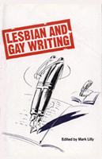

The first volume of critical essays about lesbian and gay literature that is written entirely by lesbians and gay men
The first volume of critical essays about lesbian and gay literature that is written entirely by lesbians and gay men


 The first volume of critical essays about lesbian and gay literature that is written entirely by lesbians and gay men
The first volume of critical essays about lesbian and gay literature that is written entirely by lesbians and gay men

|  |
Lesbian and Gay WritingAn Anthology of Critical Essaysedited by Mark Lillycloth EAN: 978-0-87722-706-9 (ISBN: 0-87722-706-3) |
"The ten essays in this collection—five by gay men, five by lesbians—set as their goal correcting the fuzzy vision of heterosexist critics."
—Belles Lettres
This book is a major advance in gay studies: the first volume of critical essays about lesbian and gay literature that is written entirely by lesbians and gay men. Up until now, mainstream discussion of gay literature has been written almost entirely by heterosexuals so that popular prejudice is reinforced through academic prejudice. This collection seeks to describe the authors under consideration and to counteract the effects of homophobia emanating from respectable scholars in the United States and Britain.
In the introduction, Mark Lilly demonstrates how the conventional academic view of homosexual writing has been able to vilify, distort, or ignore the lesbian/gay voice. The emphasis throughout the volume is political, stressing the inherent unfairness of the social construction of gender in a patriarchal heterosexual system.
The five essays on lesbian writing include studies of Ivy Compton-Burnett, Maureen Duffy, Ann Bannon, Sylvia Townsend Warner and Valentine Ackland, and a survey of contemporary lesbian erotic poetry. The second section, focusing on gay men, includes essays on gay alienation (Holleran, Genet, Rechy, Orton, Crane), Tennessee Williams, Ronald Firbank, paradox in gay poetry, and sexual desire in soft-porn magazines.
Mark Lilly, a tutor in literature at Birbeck College, University of London, initiated the university's first gay literature course and has been closely involved in civil liberties and gay rights campaigns in Britain.
Contributors: Lyndie Brimstone, Susan Crecy, Paul Davies, Caroline Halliday, Diane Hamer, Rupert Smith, Gillian Spraggs, Gregory Woods, Terry Woods, and the editor.
Literature and Drama
Sexuality Studies/Sexual Identity
© 2015 Temple University. All Rights Reserved. This page: http://www.temple.edu/tempress/titles/750_reg.html.